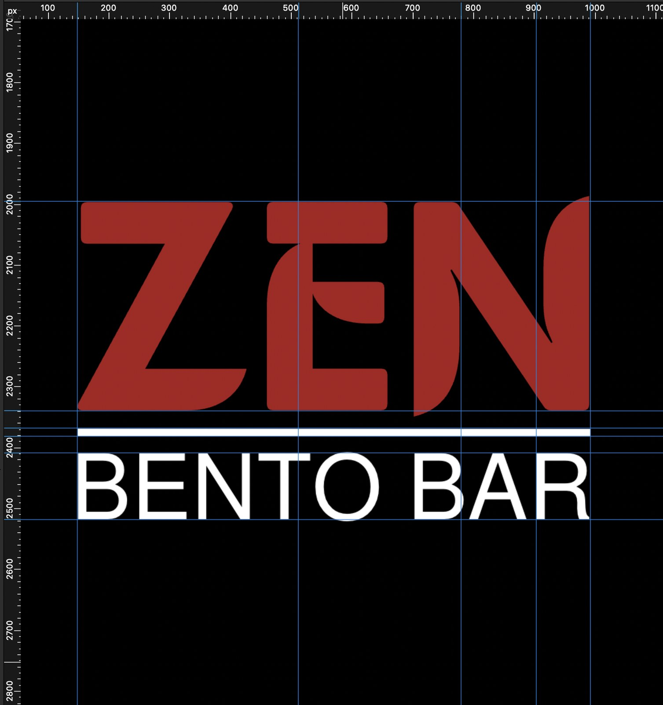
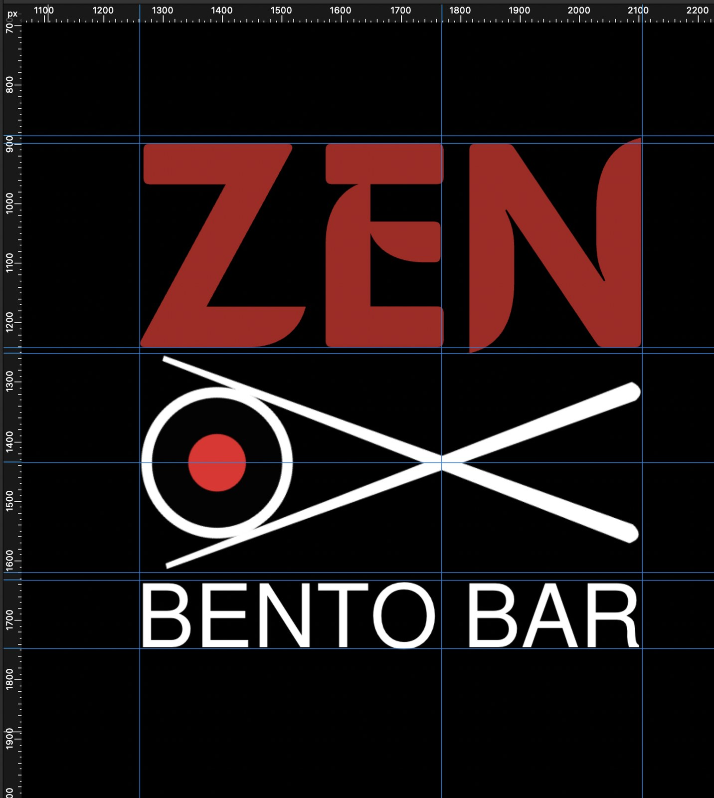
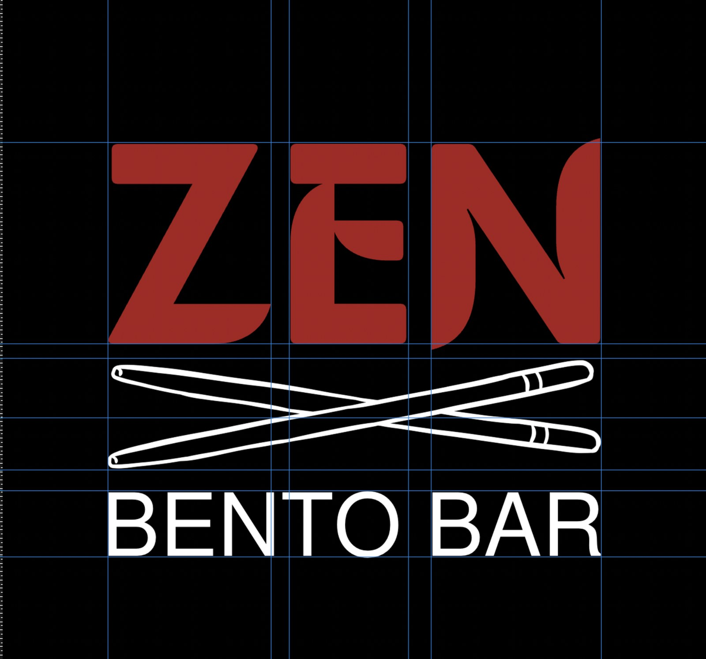
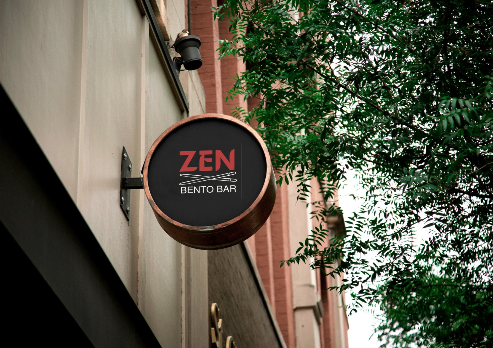
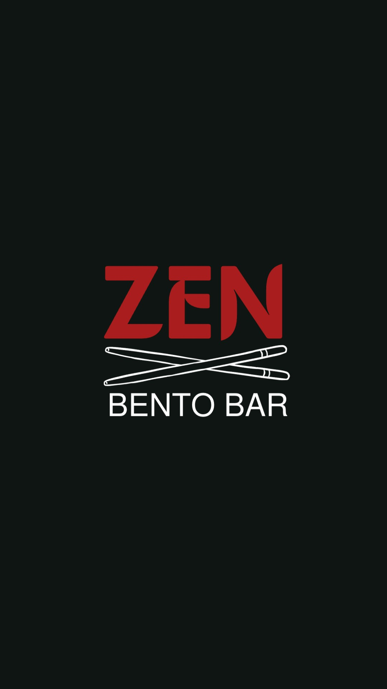

Zen Bento Bar
Japanese Street Food, Wordmark & Icon
See the Zen Bento Bar brand workA bento bar needed a logo that communicated Japanese food immediately, without relying on the exhausted collection of cherry blossoms, minimalist brushstrokes and neutral palettes that fill the category.
The name ZEN is short and punchy, which is an advantage because it can sit at a scale that dominates the whole mark. The design went through three versions before arriving at the final: the first was missing a focal point, the second had the right structure but the proportions were wrong, and the third fixed both problems.
Deep red on black is the opposite of what most Japanese food brands do right now. Red and black together carry boldness and confidence, and red specifically triggers an appetite response, which is a well-documented psychological effect. It was the right choice for a street food brand that wanted to stand out rather than blend into the premium-minimal crowd.
ZEN is set in a bold condensed face which fills maximum horizontal space at a given height. Condensed fonts feel energetic and confident, they have the same quality as a headline that wants to be read. For a three-letter brand name this was important because you need those three letters to carry real weight on their own.
The chopstick X creates an X-shape in the centre of the composition, and crossing lines act as a natural focal point for the human eye. The icon bridges ZEN and BENTO BAR so the mark reads as one thing rather than two text elements near each other. The visual weight of the icon has to match the weight of the typography on either side of it, or the whole mark falls apart.
Three versions, one decision point at each stage

What was wrong with the text-only version
The first idea was a text-only mark: ZEN large at the top, a thin white rule across the middle, BENTO BAR below. The rule was there to separate the brand name from the descriptor, which it does, but it also creates a dead zone in the middle of the composition. The eye moves from ZEN to the rule to BENTO BAR with no reason to stop anywhere.
The problem with this layout is what designers call a lack of visual weight in the midpoint. When a logo has three horizontal bands, the middle one carries the most visual responsibility, and a thin line cannot hold that position. There is also nothing here that tells you immediately what the brand does. ZEN could be a meditation app or a furniture shop. The text-only version needed something to anchor the category.
Version 1
The right structure, but the proportions in the icon were off
The second version introduces the chopstick icon, and the three-part structure immediately improves the mark. ZEN sits at the top, the chopstick X provides a mid-section anchor, and BENTO BAR grounds the base. That structure works. But the chopstick icon itself has a problem: the gap where the two sticks cross is too wide.
When a crossing or intersection point is too open, the shape reads as two separate objects passing each other rather than one unified icon. The eye wants to see the X as a single form. With too much space at the centre, it reads as loose and unresolved, and that looseness is felt subconsciously even by people who could not identify why. The fix was tightening the cross point so the sticks feel locked together.
Version 2
What the final version gets right
The chopstick intersection is tightened so the X reads as a single confident shape. The sticks are also proportioned so their visual weight matches the weight of ZEN above and BENTO BAR below, which is what makes the mark lock together as one thing rather than three elements stacked.
There is also something that happens with the ZEN lettering at this scale that is worth noting. The negative space inside the E, and the gap within the counter of the E, creates a subtle visual that reads almost like a chopstick passing through the letterform. It is not designed in an obvious way, but once you see it, it reinforces the food association. That kind of layered meaning, where the wordmark does something that supports the icon without stating it, is what separates a thought-through logo from a functional one.
Final version
